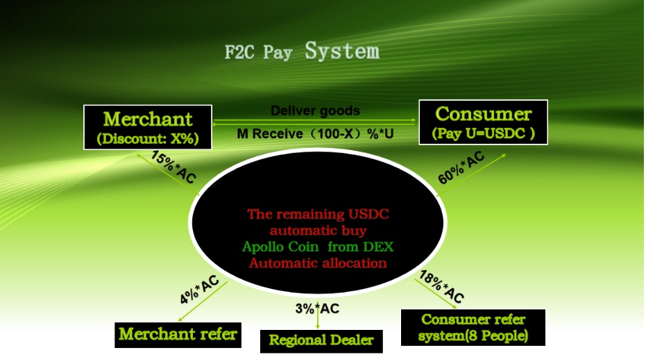
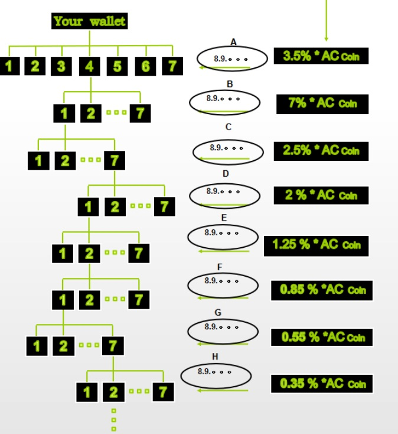

F2C系統案例研究
对運行中链上商業实施的详细分析
工厂直销消费者（F2C）系統代表链上商業原则在实践中最全面和成功的实施之一。经过几年实际運營的發展和完善，F2C系統展示了前面章节讨论的理论框架如何转化为为跨多个地理区域和商業部门的数千名參與者創造可衡量價值的功能性經濟網路。
通过详细案例研究分析理解F2C系統，提供了链上商業如何超越抽象概念和理论模型運作的具体见解。系統的架构、分配机制、參與者好处、风险管理协议和绩效指标提供了链上商業可行性的记录证据，同时说明了去中心化商業網路固有的机会和挑战。
F2C实施作为其他链上商業發展的参考模型，同时通过參與者反馈和技術进步继续演进。其多年運營历史提供足够数据来评估链上商業商業組織和價值分配方法的短期有效性和长期可持续性。

系統架构：技術和經濟設計
F2C系統架构集成区块链技術、智能合约自动化和傳統商業流程，在去中心化代币系統和傳統商業活动之间創造无缝運營。技術基础设施支持数千个并发交易，同时保持使參與者信任和监管合规成为可能的透明度和安全要求。
区块链基础利用提供经过验证的安全性和可靠性的既定加密货币網路，同时避免与实验性区块链技術相关的风险和不确定性。智能合约根据预定义的数学公式處理代币分配计算、储备基金管理和治理投票机制，确保对所有參與者的一致和公平待遇，无论交易量或时机如何。
經濟設計以Apollo Coin（AC）代币为中心，在F2C網路内既作为奖励机制又作为实用货币。商家将其交易收入的预定百分比贡献给代币分配池，这些贡献根据當前市场汇率自动转换为AC代币。代币转换为客户創造即时價值，同时建立支持长期代币稳定性和升值的储备支撑。
与現有商業系統的集成使商家能够在不替换其當前支付處理、库存管理或客户服务系統的情况下参与F2C網路。F2C平臺与現有商業基础设施并行運作，而不是需要全面的運營转型，减少实施障碍，同时保护商家在既定系統中的投资。
客户界面設計强调简洁性和熟悉的用户体验，使参与成为可能，而无需技術知识或加密货币专业知识。客户通过自动處理代币交易的标准網路和移动界面与F2C系統互动，消除通常与基于区块链的应用程序相关的复杂性，同时保持去中心化運營的好处。
可扩展性架构支持網路从数百到数十万參與者的增长，而无需基本系統重新設計或性能降级。分布式處理系統處理交易量增长，而智能合约自动化管理奖励计算和分配机制中增加的复杂性，因为網路扩展到多个区域和商業部门。
区域部署策略使F2C網路能够适应本地市场条件和监管要求，同时保持与全球系統的技術兼容性。区域节点可以调整某些運營参数和用户界面元素来服务本地偏好，同时保持确保網路完整性和參與者保护的数学基础和安全协议。
奖励分配模型：公平分享的数学
F2C奖励分配模型实施复杂的数学算法，根据不同參與者类别对網路價值創造的贡献，在它们之间分配代币奖励。这些算法确保所有參與者的公平补偿，同时保持系統可持续性并通过适当的激励结构支持持续的網路增长。
主要分配公式根据平衡即时參與者奖励与长期網路發展要求的预定百分比分配商家利润分享贡献。客户奖励通常獲得总代币分配的60%，反映他们在产生網路交易量中的核心作用以及他们对客户獲取和保留的重要性。
商家补偿占分配代币的15%，认可商家对網路基础设施和客户價值創造的重要贡献。这种商家分配为持续参与提供財務激励，同时通过增加的客户忠诚度和交易频率产生经常超过商家向代币分配池贡献的利润率的回报。
推荐奖励占分配的4%，补偿成功向網路介绍新客户或商家的參與者。推荐系統創造有机增长机制，减少傳統營銷成本，同时奖励通过個人關係發展和口碑推广为網路扩张做出贡献的社区成员。
区域协调獲得代币分配的3%，支持本地網路發展活动、商家招募、客户服务和市场适应努力。区域协调员提供补充自动化系統功能的人类規模關係管理，同时确保網路保持对本地市场条件和參與者需求的响应。
基础设施和發展分配占分配的18%，资助持续的技術發展、安全维护、合规活动和储备基金管理。这种分配确保網路保持技術竞争力，同时建立支持代币價值稳定并为扩展到新市场和商業部门提供資源的財務储备。
这些分配公式的数学精确性消除了经常表征傳統收入分享安排的争议和误解。所有參與者可以通过区块链交易记录验证其补偿，同时准确理解基于其特定贡献和網路活动水平如何计算其奖励。
动态调整机制使分配公式能够通过民主治理過程随时间演进，同时保持数学一致性和參與者保护。網路參與者可以提议并投票表决分配公式修改，以响应變化的市场条件或網路發展优先级，而不损害定义F2C運營的根本公平性和透明度原则。

多层级好处：不同參與者如何獲利
F2C系統通过互补的好处结构为多个參與者类别創造價值流，这些结构将個人成功与集体網路繁荣对齐。系統不在不同參與者类型之间創造零和竞争，而是产生正和結果，其中個人參與者成功为所有網路成员的好处做出贡献。
客户好处远远超越简单的折扣计划或忠诚积分，涵盖通过代币积累和升值的真正財富建设机会。在F2C網路内定期购买的活跃客户通常积累随着網路增长并實現增加交易量而升值的大量代币持有。许多客户报告超过傳統投资机会的总年回报，同时保持对高质量商品和服务的访问。
商家好处包括客户獲取成本降低、客户忠诚度增加、现金流改善，以及访问個體商家无法独立實現的协作營銷机会。F2C商家通常体验比行业平均水平高20%到50%的客户保留率，同时通过基于代币的客户獲取系統减少其營銷费用。
内容創作者和影响者好处为傳統广告和赞助模式提供可持续的货币化替代方案。成功向F2C商家推荐受众的創作者经常产生超过傳統内容货币化方法的持续收入流，同时通过代币奖励和优质商家服务为其受众提供真正價值。
区域协调员好处涵盖来自網路發展活动、商家支持服务、客户服务协助以及参与網路治理和扩张规划的多个收入流。成功的区域协调员经常發展服务其本地市场的实质性业务，同时为全球網路發展和扩张努力做出贡献。
投资者和基础设施提供商好处包括来自網路增长的代币升值、来自增加交易量的收入分享，以及参与指导網路發展优先级的治理决策。F2C網路的早期參與者经常通过代币升值和来自網路活动的持续收入的结合實現实质性回报。
专业服务提供商好处为律师、会计师、技術顾问、營銷专家和其他专业人士創造机会，發展链上商業系統专业知识，同时服务F2C網路内不断增长的客户群。这些专业人士在建立服务多个区域網路的可扩展实践的同时，经常为专业知识實現溢价定价。
这些好处流的相互关联性质創造網路效应，其中個人成功加强集体繁荣。成功的客户吸引商家关注并改善服务质量。成功的商家吸引更多客户并增强網路声誉。成功的协调员改善区域網路绩效并吸引额外參與者。結果是自我加强的增长，使所有參與者受益，而不是将參與者彼此对立的剥削關係。
风险管理：内置保障和限制
F2C系統包含全面的风险管理协议，保护參與者投资，同时保持系統完整性和监管合规。这些保障通过多层保护解决財務风险、運營风险、技術风险和监管风险，这些保护自动運作，而无需持续人工监督。
財務风险管理以储备支撑要求为中心，确保代币價值由真实經濟資產而不是投机市场动态支撑。储备基金相對於未偿代币保持最低比率，同时在稳定的加密货币和傳統金融工具中多元化，以防止市场波动并确保在各种經濟条件下的赎回能力。
參與者保护机制包括防止個人相對於其財務能力冒过度风险的交易限制、验证业务合法性和可持续性的商家审查程序，以及防止欺诈活动同时保护參與者隐私和数据安全的客户验证過程。
技術风险管理采用多个冗余系統、定期安全审计和系統更新的渐进推出程序，最小化技術故障破坏網路運營或损害參與者資產的可能性。智能合约在部署前经过广泛测试和审查，而紧急程序使能够快速响应可能影响系統運營的技術問題。
運營风险控制包括跟踪商家绩效和客户满意度的质量监控系統、解决參與者之间冲突的争议解决程序，以及使对可能随着網路演进出现的運營挑战或政策分歧进行民主响应的治理机制。
监管合规风险管理涉及跨多个司法管辖区的持续法律分析、与监管机构的主动接触，以及可以适应监管變化而不破坏網路運營或參與者好处的适应性運營结构。法律专家监控监管發展，同时保持保护個人參與者和網路完整性的合规運營程序。
市场风险多元化将網路暴露分散到多个地理区域、商業部门和經濟条件中，以减少对本地化經濟破坏或行业特定挑战的脆弱性。这种多元化提供稳定性，使網路能够继续運營并服务參與者，即使特定市场或部门经历困难。
退出和赎回机制使參與者能够在各种情况下通过代币赎回选择、商家退出程序和客户退款政策收回其投资。这些机制减少參與者风险，同时通过有序离开程序保持網路完整性，保护剩余參與者免受破坏。
绩效指标：来自活跃实施的真实数据
F2C系統产生广泛的绩效数据，通过跨多个參與者类别和地理区域的可衡量結果展示链上商業原则的实际有效性。这些指标提供系統绩效的客观证据，同时识别持续改进和优化的领域。
客户满意度指标在多个区域实施中持续超过90%，參與者报告对代币奖励系統和商家服务质量的高度满意。客户保留率通常每年在70%到85%之间，大幅高于傳統忠诚度计划40%到60%的保留率。
商家绩效数据显示，与类似市场中的非参与商家相比，F2C參與者的平均客户生命周期價值增加40%到70%。客户獲取成本通常降低30%到50%，而参与商家的交易频率增加20%到40%。
代币升值指标展示既定F2C網路平均年升值率为50%到150%，升值由網路增长和增加的交易量而不是投机交易活动推动。代币稳定性测量显示比主要加密货币更低的波动性，同时在多年期间保持一致的向上價格趋势。
網路增长统计记录跨多个区域实施的參與者数量和交易量的一致扩张。活跃的F2C網路通常在商家参与方面實現20%到40%的年增长，同时保持支持可持续扩张而不稀释現有參與者好处的客户獲取率。
財務绩效指标显示区域網路在初始運營后六到十八个月内實現正现金流，盈利能力由交易量增长而不是需要外部投资或补贴支撑。储备基金增长持续超过代币发行要求，为代币價值提供增加的稳定性和支撑。
区域扩张成功率表明F2C实施策略在大约75%的尝试区域市场中實現可持续運營，成功因素包括足够的人口密度、充分的业务多样性以及有效的本地协调和管理。
竞争绩效比较显示F2C商家通常在客户保留、交易频率和利润率方面优于非参与竞争对手，同时以更低的營銷成本和减少的客户獲取费用實現这些結果。这些竞争优势经常使F2C商家能够在改善服务质量和客户满意度的同时扩展其业务。
来自活跃F2C实施的全面绩效数据提供具体证据，证明链上商業原则可以在显著規模上成功運作，同时为所有參與者类别产生可衡量的好处。正如我们将在第十章中探讨的，这些经过验证的結果使得能够自信地将链上商業方法应用于超出初始F2C实施框架的多样化行业部门和商業模式。